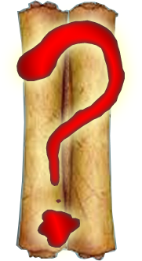
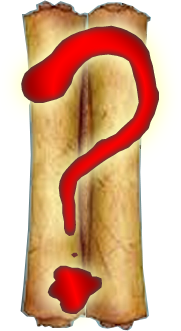

"Statuile grecilor antici erau exagerat de senine, asa sperau ei ca vor arata oamenii viitorului" (Vasile Ghica).

Decorul se schimbă, iar în fața ta apar - deodată - statuile mai multor filosofi. Fiecare statuie se conectează cumva la o cifră. Nu prea știi ce ai de făcut, dar peste tot în jur par să fie instrucțiuni...